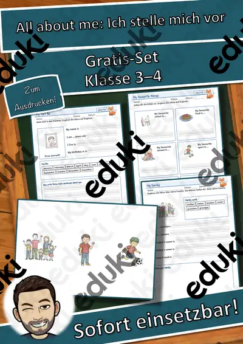
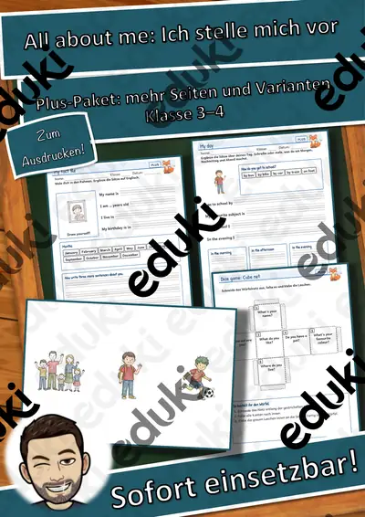
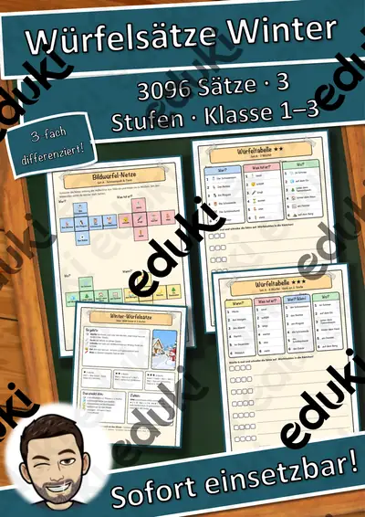

Lesespur: Meine Daten: was ich im Netz für mich behalte – Lesespurgeschichte mit Rätseln (Klasse 3)
Meine Daten – was ich im Netz für mich behalte – Lesespurgeschichte Informatik (Klasse 3/4)Schick deine Klasse auf eine Lesespur durch eine Kinderstadt! Merve und Tim aus der 4b sind in den Sommerferien in der Kinderstadt Mini-Wiesental – mit Rathaus, Postamt, Zeitung und vielen Läden. Spielleiter Herr Albers zeigt ihnen, welche Daten man im Netz teilen kann und welche man besser für sich behält: Im Meldeamt erfahren sie, was persönliche Daten sind, im Fotostudio, warum man vor dem Posten fragen muss, und im Postamt, wer Adresse und Telefonnummer bekommen darf. In der Spielhalle geht es um Spitznamen und Fremde im Chat, im Handyladen um App-Berechtigungen, im Kaufladen um Gratis-Apps, bei denen man mit Daten bezahlt, und in der Zeitungsredaktion darum, dass das Netz kaum etwas vergisst. Merves Stoff-Fuchs Fuxi ist immer dabei. Am Ende jedes Abschnitts verrät ein Hinweis den nächsten Ort auf dem Plan – nur wer genau liest, findet den Weg und sammelt alle geheimen Buchstaben zum Lösungswort.
Die perfekte Lesespur für INFORMATIK und Medienbildung in der 3. und 4. Klasse – ideal für den Heimat- und Sachunterricht, Projekttage, Vertretungsstunden und fächerübergreifend mit Deutsch und Mathematik: Sie verbindet sinnentnehmendes Lesen mit Datenschutz zum Anfassen und kleinen Rechenaufgaben. Das Material ist SOFORT EINSETZBAR, funktioniert ganz ohne Computer und ist in DREI DIFFERENZIERUNGSSTUFEN (leicht ★ / mittel ★★ / schwer ★★★) angelegt.WICHTIG: Das komplette Material ist sowohl in FARBE als auch in SCHWARZ-WEISS enthalten – so bleiben die Druckkosten niedrig.DAS IST ENTHALTEN
- Lesespurgeschichte in 3 Niveaus (leicht, mittel, schwer)
- farbiger Plan der Kinderstadt als Suchkarte
- Hörverstehen mit QR-Code zur MP3 (selbstständiges Hören mit Kopfhörern)
- vier Aufträge auf dem Weg: eine Zuordnung, ein Quiz, eine Rechenaufgabe und ein Steckbrief
- Rätselseite (Wörter-Suchsel + Fragen zu meinen Daten)
- Ausmalbild zum Thema (Häuschen mit Briefkasten, Kamera, Rathaus und Stoff-Fuchs)
- ausführliches Lösungsblatt für die Lehrkraft
- alles zusätzlich als komplette Schwarz-Weiß-VarianteSO GEHT DIE LESESPURDie Kinder lesen ab START, finden im Text den nächsten Ort, suchen ihn auf dem Plan und lesen bei dieser Station weiter. An jeder richtigen Station gibt es einen Buchstaben. Eingeplante Sackgassen (Laterne, Fahrradständer, Kiosk, Brunnen) sind keine Stationen und dienen der Selbstkontrolle. Am Ende werden die gesammelten Buchstaben umgestellt und ergeben ein geheimes Lösungswort. (Die Lösungen sind selbstverständlich nur im Lösungsblatt für die Lehrkraft enthalten.)INHALTLICHER SCHWERPUNKTPersönliche Daten (Name, Geburtstag, Adresse, Telefonnummer, Fotos), Recht am eigenen Bild und verräterische Hintergründe, Spitzname statt echtem Namen, Fremde im Chat und Hilfe holen, App-Berechtigungen, Gratis-Apps und Werbung, das Netz vergisst nicht, Konten privat stellen, Eltern fragen.ABGEDECKTER LEHRPLAN (Klasse 3/4, Informatik / Medienbildung)
- Heimat- und Sachunterricht (LehrplanPLUS Bayern) – Jahrgangsstufe 3/4: Leben in einer Medien- und Konsumgesellschaft – Medien sicher und verantwortungsvoll nutzen, persönliche Daten schützen.
- Mathematik – Jahrgangsstufe 3/4: Multiplizieren, Addieren und Subtrahieren im Sachzusammenhang.
- Deutsch – Lesen: Texte sinnentnehmend lesen; Zuhören: einem Hörtext folgen (Hörverstehen mit MP3).
- Informatische Grundbildung / Medienkompetenz: Datenschutz und Privatsphäre im Netz.
Geeignet für Freiarbeit, Stationenlernen, Vertretungsstunden, Wochenplan, Projekttage und als Einstieg in das Thema Datenschutz in der Grundschule. Klassenstufe 3/4.
Ähnliche Materialien

Lesespur: Der Leserbrief: meine Meinung in der Zeitung – Lesespurgeschichte mit Rätseln (Klasse 8)

Lesespur: Phishing und Betrug im Netz erkennen – Lesespurgeschichte mit Rätseln (Klasse 9)

Lesespur: Datendetektive: Daten sammeln, zählen, darstellen – Lesespurgeschichte mit Rätseln (Klasse 3)

Englisch-Werkstatt: All about me: Ich stelle mich vor – kostenlos, Klasse 3–4

Englisch-Werkstatt: All about me: Ich stelle mich vor – Plus-Paket, Klasse 3–4

Lesespur: Die Cloud: Daten im Rechenzentrum – Lesespurgeschichte mit Rätseln (Klasse 9)

Würfelsätze Winter: über 3000 Sätze würfeln und schreiben, mit Bildwürfel-Netzen in 3 Stufen (Klasse 1–3, DaZ)